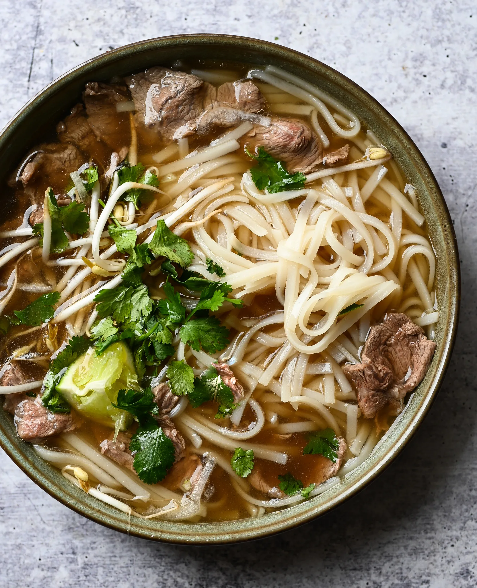

Beef Pho

Description
Last and personally my favorite dish is Beef Pho! Beef pho is a traditional vietnamese soup that brings the taste and warms our body during the cold weather. With beef inside it brings pho a top tier for United States as there favorite dish.
Ingredients
- 5 pounds beef soup bones
- 1 tablespoon salt, divided
- 2 gallons of water
- 2 medium onions, quartered
- 1 (4inch) piece fresh ginger root
- 2 pounds beef oxtail
- 1 white (daikon) radish, sliced
- 2 ounces whole star anise pods
- 1/2 (3 inch) cinnamon stick
- 2 whole cloves
- 1 tablespoon white sugar
- 1 tablespoon fish sauce
Steps
- Place beef bones in a 9-quart (or larger) pot; season with 1 teaspoon salt. Pour water into the pot and bring to a boil. Reduce heat and simmer broth for about 2 hours.
- Meanwhile, set an oven rack about 6 inches from the heat source and preheat the oven's broiler. Line a 10x15-inch roasting pan with aluminum foil.
- Place onions and ginger on the prepared pan. Cook under the preheated broiler until onions and ginger are blackened on all sides, 5 to 10 minutes. Turn onions once while cooking. Remove from oven and rinse under cold water until cool enough to handle. Remove and discard charred onion skins; cut charred ginger into slices.
- Strain broth. Discard bone and bouquet garni. Reserve meat from bones for another use. Chill broth in the refrigerator, 8 hours to overnight.
- Skim and discard fat from the top of chilled broth. Pour broth into a pot; bring to a boil. Reduce heat and keep hot until ready to serve
- Bring a pot of water to a boil. Turn off heat. Stir in rice noodles and let sit until noodles are tender yet chewy, 6 to 10 minutes
- Drain and divide noodles among bowls, about 1 1/2 cups per serving. Top each with a few sirloin slices. Ladle hot broth over sirloin and noodles